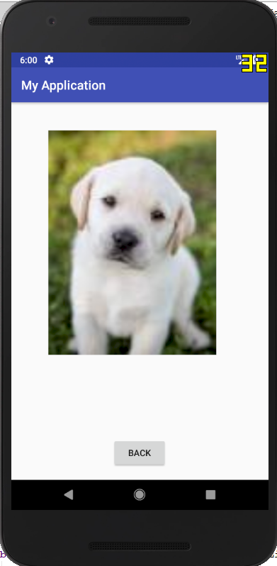
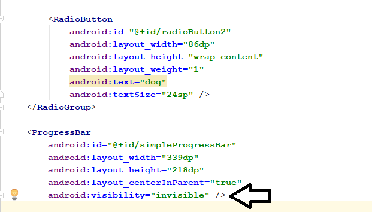

Introduction to User Interface Elements in Android
Objectives: In this tutorial you will learn how to use different User Interface elements provided by Android Studio. At the end of the session you will be able to,
- Use Radio Buttons for selection of available options to user.
- Use Progress Bar while next page is loading.
- Display images in Android application.
In this session we are going to create an application in which the user will be able to choose an image to display.
The user can select an image of either a cat or a dog using radio button and click next.
Part 1: Adding Images in Android Project
- You first task is to find and download two images, one of a dog and the other is a cat. Each image should be less than 500kb in size.
- Rename the images to cat.jpg and dog.jpg respectively.
- Now copy the images from where they are stored on your computer.
- Now open your project. The images of your project will be stored in a folder named 'drawable' which is located inside 'res' folder. Expand it in project window.
- Right click on 'drawable' folder and click on paste.
- Click Ok on next windows. Now you will be able to see the image names listed in drawable folder. Refer the images.

Part 2: Building User Interface
The image shown below are the two layouts we are going to create.
- Open activity_1.
- Change the text to ‘Select your Animal’ and change it’s position and size accordingly.
- Select the ‘RadioGroup’ from Palette -> Buttons.
- Adjust the size and position of RadioGroup. Remember, this area will contain both radio buttons.
- Change the ID of RadioGroup to ‘radioGroupId’
- Now, add two radio button and position them as shown in image.
- Change the text, ID and textSize of ‘cat’ radiobutton as shown in the image.
- Make the same changes for ‘dog’ radio button.
- Change the text of the button to ‘Next’.
- Add a circular progressbar from ‘widgets’. Make sure it does covers more space than the radio group as shown in the image. Give it ID as ‘simpleProgressBar’. 
- Make it’s visibility to ‘invisible’.
- Go to activity_2.
- Go to Palette -> Common
- Drag and drop the 'ImageView' on the page.
- To select the resource, expand 'Project'.
- Select image of cat of dog.
- Click ok.
- Resize it appropriately and give ID as 'imageView'.
- Rename the button to 'Back'.

Part 3: Adding the Functionality
Enter the code highlighted in the following image in Activity1.java
Let’s explore different concepts in the following code.
A RadioGroup class is used for set of radio buttons.
If we check one radio button that belongs to a radio group, it automatically unchecks any previously checked radio button within the same group. To use a radiogroup and progressbar import statement is used to invoke the packages which contains RadioGroup and ProgressBar widgets.
Variable of type RadioGroup is created and initialized to the value of ‘radioGroupId’ which we have included in our layout file.
A variable ‘id’ of String type is created.
setOnCheckedChangeListener() method will get triggered whenever the user will select either of the radio buttons.
onCheckedChange() method will handle the operations to be done when the radiobutton is selected.
The Java switch statement a control statement which executes one statement from multiple conditions. If radiobutton1 which is of ‘cat’ is selected then ‘id’ is initialized to 1. If radiobutton2 which is of ‘dog’ is selected then ‘id’ is initialized to 2.
ProgressBar type variable simpleProgressBar is initiated with the ID of progressbar used in the layout file. Since we want to see the progressbar while the second screen is being loaded, we are setting it to ‘visible’ state using setVisibility() method in onClick() function.
Activity2.java is the class responsible to display the image. The decision to select an image to display depends on the value of ‘id’ variable. But this variable is in Activity1.java. So how would Activity2.java will use this variable which is not present in its scope ?
Hence putExtra() method is used where ‘id’ can be sent to next activity which is Activity2.java in this case. Here ‘id’ is just renamed to ‘SelectedRadioButton’.
Enter the above code in Activity2.java
ImageView package is imported and variable ‘imageViewPhoto’ of its type is declared. imageViewPhoto is storing the id of ‘imageView2’ which is we have used in the Activity_2 layout file.
Now, to use any variable from calling activity whichi is Activity2 in this case, we need to use getIntent().getExtra(). Variable ‘extras’ is of type ‘Bundle’ which is used to pass information between activities and other application components. Variable message stores the value of ‘SelectedRadioButton’.
Here switch statement sets the image resource for the imageView which depends on the value of selected radio button. You can see that photo of cat or dog is selected from ‘drawable’ folder in setImageResource() method.
Now check the IDs of all the elements we used in our project till now and make sure all the changes are saved.
Run the application and check the applications functionality.
Push the changes to your Github’s respective repository.